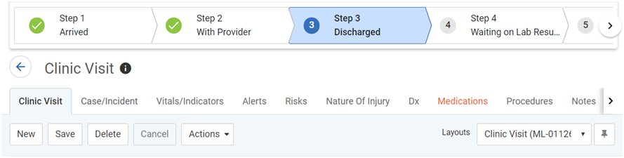

This table is used to define a workflow that can be associated with a layout to provide a visualization of the steps and current step of a record. These are displayed in a banner at the top of the layout, as shown below:

A workflow may be connected to a module, or it may be connected to a swimlane view in one of two ways:
Build the workflow and create the steps, and then create the swimlane from that workflow, or
Build a swimlane (see Working with Swimlane Views) and then create a workflow with steps from that swimlane.
The Administrator menu provides a shortcut, in the Tools section, to the Workflow look-up table.
In the list view, click New.
Enter a Code and Description of the workflow.
Select the Module that the workflow relates to, and the Workflow Source (a column in the selected module).
Click Save.
On the Steps tab, define the steps in the workflow:
Select the Workflow Source Value and enter a Step Title to be displayed in the workflow banner (which may or may not mirror the Value). Enter the Sequence of this step in the workflow. Optionally enter a Step Description that will be displayed when the user clicks on the step in the workflow banner.
Optionally, on the Workflow Actions tab:
Create business rule actions that will fire when the record reaches this step (see Using Business Rule Actions to Manage Workflow below and Setting Up Business Rule Actions).
Create workflow actions to identify fields that are required or read-only at this step.
Create workflow actions (e.g. for approve
or reject) and define:
- Destination Status - the status
that the record will progress to upon completion of the workflow
step
- Permissions - only the user
or employee selected here will see the button/action and can complete
the workflow step
- Permissions - Group and Team -
only a member of the selected group or team, who is an active employee in the group or team within the Start-End Date period, can complete the workflow
step
- eSignature - if you are using
LDAP or SAML, user will be prompted to enter their password; if
you are using the “Application User ID and Passwords” authentication
method, user will be prompted to enter their user ID and password.
This functionality will be available for the SSO authentication
method in a future release.
- Require Comments - a Comments text
box will be available and required for this step
- Map Comments To - any comments
entered will be displayed in the selected field
- Display as Button - the action
will display as a button on the layout instead of in the Actions
menu.
To configure multiple approvals (up to eight) at each step within the workflow, in the Workflow Actions section choose Actions»Create new parallel approval workflow action and define the approval action. The record will not advance to the next status until all approvals for the step have been completed. When a rejection is executed, the record goes back to the first approval step. The approval button or action will be available for the individual approver or the approver within the approver group only when at the defined workflow step. All approve or reject actions, along with the associated comments, are recorded in the Approval History for the record.
If you want to create a swimlane view, choose Actions»Create swimlane from workflow. The swimlane editor opens, with the workflow steps displayed as selected source fields; select the columns to appear in the swimlane (see Working with Swimlane Views).
Edit the layout(s)
to reference this workflow (see Defining
Form Layouts).
The Linked Layouts tab will display all layouts that have been associated
with this workflow.
A Workflow History sublist may be added to layouts to capture the workflow history for the record being viewed.
In the list view, click New.
Enter a Code and Description of the workflow.
Select the swimlane in the User List View field.
Click Save. The Steps tab is populated based on the columns in the swimlane. Modify the Sequence or Description of each step if required.
Edit the layout(s)
to reference this workflow (see Defining
Form Layouts).
The Linked Layouts tab will display all layouts that have been associated
with this workflow.
The following business rule actions can assist in managing and monitoring workflows:
For more information, see Setting Up Business Rule Actions.